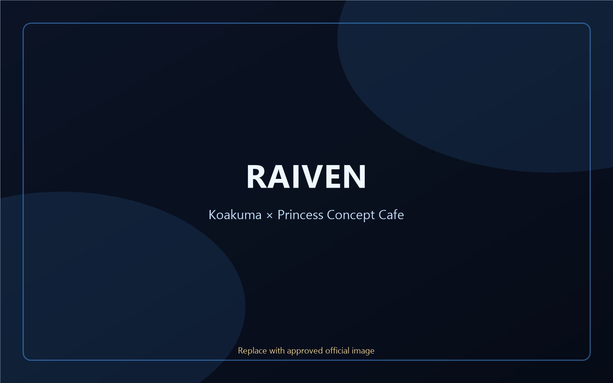
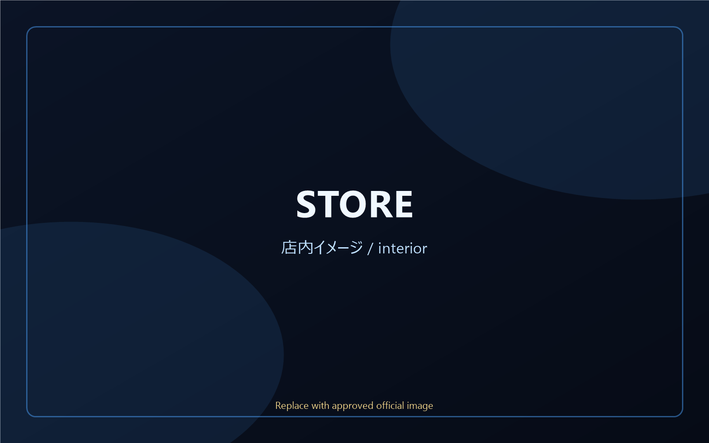
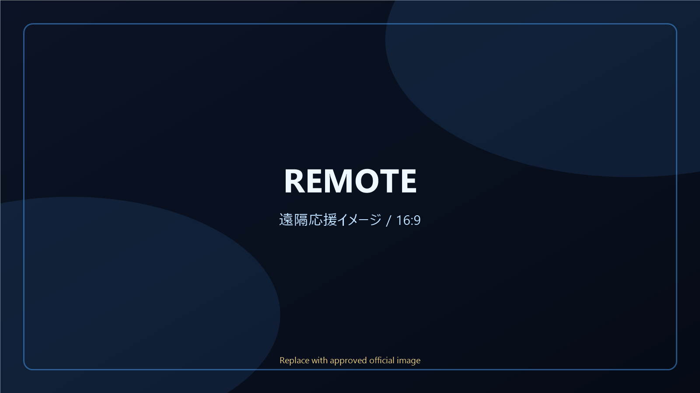

Koakuma × Princess Concept Cafe
小悪魔なお姫様に会える、
小悪魔なお姫様に会える、
歌舞伎町のコンカフェ。
ピンクと黒に包まれた可愛いお城で、甘くて少し妖しい時間を。RAIVEN 歌舞伎町店で、あなたをお姫様扱いする特別なひとときを。

最新の更新情報
Concept
小悪魔×お姫様の、
小悪魔×お姫様の、
甘くて妖しいお城へ。
RAIVEN 歌舞伎町店は、小悪魔なお姫様たちに会えるコンセプトカフェ。可愛さの中に少しだけ妖しさを忍ばせた空間で、初めての方も、いつもの方も、楽しく癒される時間を過ごせます。
2026年5月1日 GRAND OPEN。プロデュースは「貴方のあんちゃん」。姉妹店「RAIVEN 仙台国分町コンカフェ」もあります。

Cast
お城で待つ、小悪魔なお姫様たち。
キャストの在籍・出勤状況は変動します。最新情報は公式Xをご確認ください。
Menu & Price
初めてでも分かりやすい、料金とメニュー。
チャージ、ドリンク、チェキ、遠隔応援など、楽しみ方はいろいろ。お酒が飲めない方も楽しめます。
掲載料金は参考情報です。最新の料金・メニュー・限定メニュー・在庫は店頭または公式X・公式BASEをご確認ください。
Event
今だけの、テーマデー。
イベントの日程・内容は変動します。最新は公式Xをご確認ください。
Remote Support
会いに行けない日も、遠隔で応援。
遠方の方や来店できない日でも、公式BASEからキャストを応援できます。お姫様ドリンク、チェキ、ショットなど、メニューは時期により変動します。
